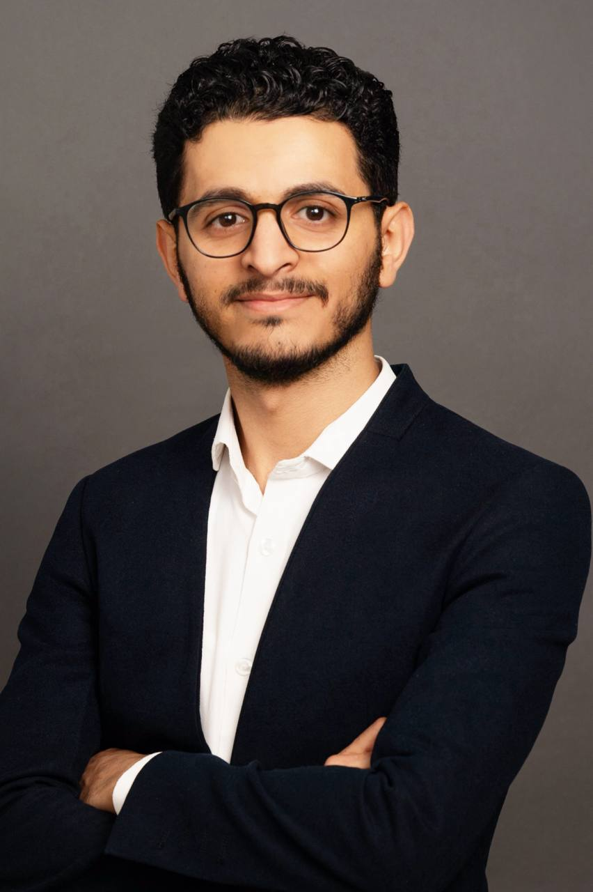

About
I am a Research Associate at the WHO Collaborating Centre for Health Literacy at the Technical University of Munich, working under Prof. Orkan Okan. My research spans adolescent health literacy, oral oncology, HPV-related cancers, epidemiology, and systematic review methodology.
I hold an M.Sc. and a B.D.S. with a clinical background in Oral Medicine and Periodontology. Prior to my current position, I worked as a clinical educator at multiple universities in Yemen and held a research position at Jazan University, where I independently designed studies and authored systematic reviews on oral health. I am a DAAD Scholar.
I contributed to two WHO-mandated global projects: the development of a health literacy competency standards framework for adolescents (ToR 3) and a global adolescent health literacy assessment tool (ToR 4). I attended the WHO Collaborating Centres Global Forum in Lyon in April 2026.
Experience
Academic research and clinical education across Germany and the Middle East
- Evidence synthesis for a WHO-mandated global adolescent health literacy assessment tool (47 studies included).
- Framework development for health literacy competency standards for young people (27 studies included).
- Presented at the WHO Collaborating Centres Global Forum, Lyon, April 2026.
- Independently designed and conducted epidemiological studies on oral health outcomes.
- Authored and published systematic reviews in peer-reviewed international journals.
- Supervised and instructed over 500 dental students across three institutions in live clinical settings.
Research
Projects across oral oncology, epidemiology, and global health literacy
Publications
Peer-reviewed research across oncology, public health, and dental sciences
Contact
Open to research collaborations, scientific discussions, and professional opportunities